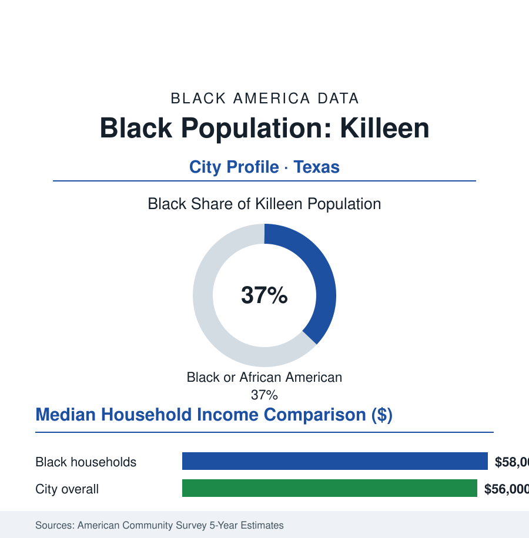

Black Cities
Black Killeen: 60,000 in the City the Army Built
Killeen's Black community, roughly 60,000 and over a third of the city, is Fort Cavazos made civilian — the military pipeline's hometown, with its economics in uniform. The census portrait.

Killeen's Black community numbers roughly 60,000 people — about 37% of the city's 160,000 residents — in a city that exists for one reason: Fort Cavazos, one of the largest military installations on earth, sprawls across the hills northwest of town, and the city it feeds is the armed forces' demography poured into civilian streets — young, veteran-dense, and Black at a share that mirrors the Army itself. This profile reads the garrison town's numbers.
From Railroad Stop to the Great Place
Killeen began as a railroad and cotton town — its small Black farming community of the Bell County data in the first census rows — and was remade entire in the 1940s when the Army built Camp Hood beside it: the construction boom and the base's permanent garrison converted a town of thousands into the city the postwar censuses chart, growth curve tracking the Army's own (the Korean and Vietnam buildups, the all-volunteer era's professionalization, the long wars' rotations). The base — renamed Fort Cavazos in the recent renaming of the Confederate-named posts, honoring a Latino general in a compromise the local record debated — hosts the III Armored Corps and tens of thousands of soldiers, and its gates open onto Killeen's streets: the barbershops and soul-food counters, the off-post housing tracts, the churches whose rolls turn over on the Army's three-year rhythm and whose military ministries are the city's connective tissue, the Black business corridors serving a clientele in and out of uniform (the city's first Black mayor and council generations arriving through the base-era electorate in the civic record — the franchise riding, here as across the post-South, on the federal enclave's relative openness). The cultural file is the military diaspora's own: a Black population drawn from everywhere — the South's sons and daughters, the Caribbean and African immigrant soldiers of the foreign-born file naturalized in uniform, the Korean and German spouses of two generations of postings — a cosmopolitan Blackness in a Central Texas cotton county, the census's ancestry tables reading like a duty roster of the world.
The Economics of the Uniform
The ACS data carry the military premium in civilian dress: Black median household income running at or slightly above the city's overall median in the estimates — a near-parity rare in this atlas, purchased by the federal payroll's structured equality of the military article's kind (the pay table that does not negotiate, the housing allowance, the health system's roof) — and the veteran share among the city's adults among the highest of any city in this section (the workforce data showing the base's retirees settling where they served: the twenty-year sergeant at forty with a pension, a second career in the defense-contracting and civil-service tiers of the base economy, the disability and education benefits of the veterans file flowing into the household ledger). Homeownership follows the VA loan's signature (the zero-down mortgage's uptake in the transaction data — Killeen's market a national exhibit of the benefit's power when a whole city's buyers carry it, the new-subdivision rows marching across the county's cotton land in the permit data), and the commercial economy indexes to the deployment cycle (the retail and services data breathing with the brigades' rotations — the car lots and tattoo rows of the gate corridors, the payday storefronts the regulators chase, the childcare centers' waitlists a function of the training calendar). The vulnerabilities are the obverse of the integration: a one-employer city in the BRAC era's memory (the base-realignment rounds' civic anxiety in the local record), the federal shutdowns and budget fights registering instantly at the register, and the transition file — the separating soldier without a plan, the veteran homelessness and justice-system rows of the national data with a local address.
Reading Killeen's Numbers
Thirty-seven percent, near income parity, and a mortgage market built on a federal promise kept: Killeen is the control experiment among this section's cities — what the Black economic data look like when the employer is the United States, the pay is posted, and the loan is guaranteed. The experiment's limits are as legible as its results: the parity retires with the soldier and answers to Washington's budget, not the city's own hand. The census counts 60,000 people in the Army's hometown. Their ledger is the strongest argument in this atlas for what structured equality pays — and a standing question about why it takes a uniform to get it.
More in Black Cities
Black Atlanta: Population, Distribution, and Growth of a Black Metropolis
Metro Atlanta holds more than two million Black residents — roughly one in three, second only to New York. The suburban distribution, migration history, and composition of Black Atlanta in the census data.
Black New York: The Largest Black Population in America
The New York metropolitan area holds about 3.4 million Black residents — more than any metro in the nation — and the city itself about two million. The census profile.
Black Washington: The District and the Metro
The Washington metro holds about 1.6 million Black residents, and the District itself — long a majority-Black city — now records a Black share near 41 percent. The census profile.
Source: U.S. Census Bureau, 2020 Census and American Community Survey 5-year estimates; City of Killeen; U.S. Army and Fort Cavazos public affairs records.